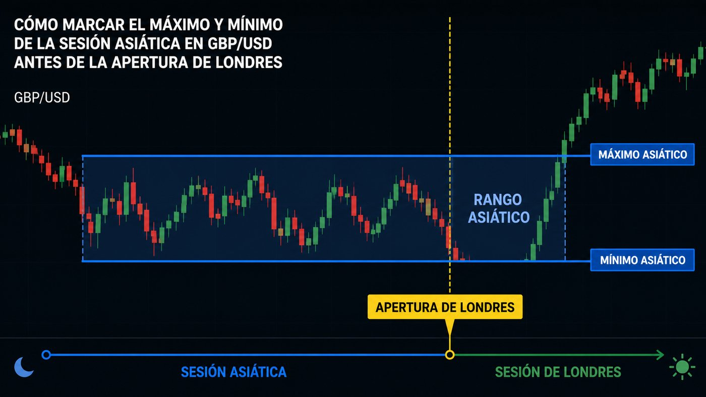
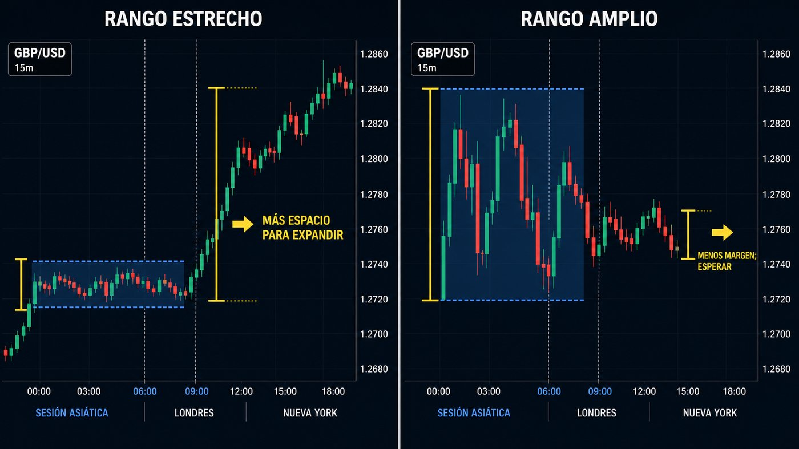
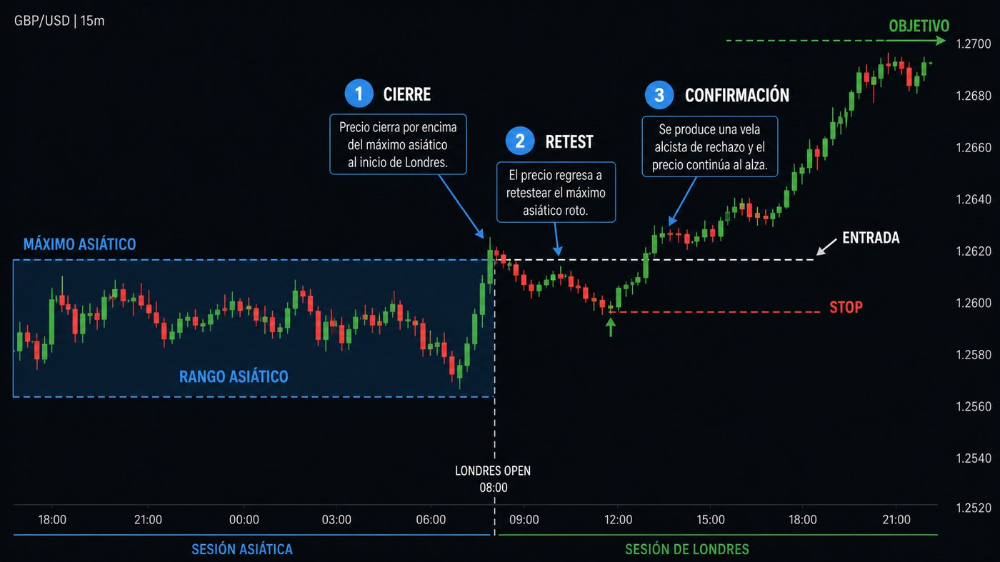
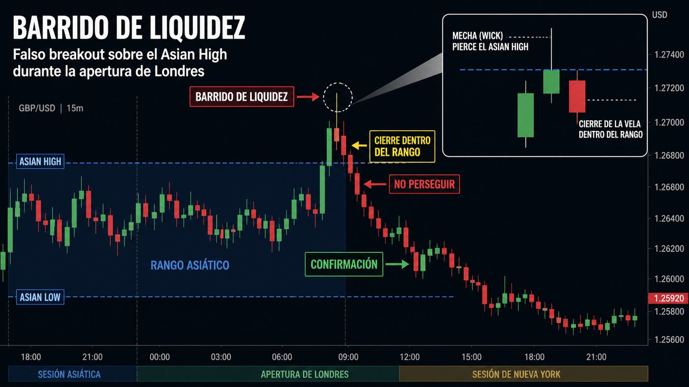
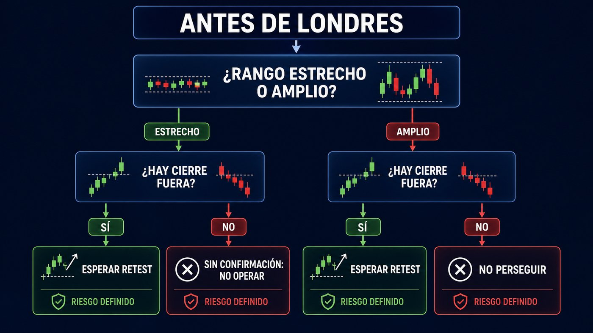

La apertura de Londres es uno de los momentos más observados del mercado de divisas. En pares vinculados a la libra, como GBP/USD, suele coincidir con un aumento de participación, liquidez y velocidad. Sin embargo, que aparezca más movimiento no significa que debamos entrar de inmediato. La referencia útil es lo que el precio construyó antes: el máximo y el mínimo de la sesión asiática.
Esos dos extremos forman una caja. Al llegar Londres, el precio puede romperla con aceptación, barrer uno de sus lados y volver dentro, permanecer atrapado o haber recorrido ya demasiado. Cada situación exige una respuesta distinta.
La idea central: Asia construye, Londres decide
Durante las horas asiáticas, GBP/USD tiende con frecuencia a negociar con menos participación europea. Puede formar un equilibrio temporal donde compradores y vendedores acumulan órdenes. Por encima del máximo suelen concentrarse stops de posiciones vendedoras y órdenes de compra; por debajo del mínimo, stops de compradores y órdenes de venta.
Cuando Londres entra, ese aumento de órdenes puede producir una expansión. Pero un extremo roto no es por sí solo una señal: puede haber ruptura real, barrido de liquidez o simplemente ruido. Por eso se observa cómo cierra la vela y qué hace el precio después.
Cómo marcar el máximo y el mínimo asiático
Antes de la apertura europea, delimita el tramo horario que vas a considerar como sesión asiática y mantén siempre el mismo criterio. El horario exacto depende del huso de tu plataforma y cambia con el horario de verano. No copies horas de otro gráfico sin comprobarlas: convierte primero la apertura de Londres a la zona horaria del bróker.
- Selecciona un marco de contexto. M15 resulta práctico para ver la caja; M5 puede servir después para afinar la confirmación.
- Traza el máximo. Usa el precio más alto alcanzado durante el intervalo asiático, incluyendo la mecha.
- Traza el mínimo. Usa el punto más bajo del mismo intervalo, también incluyendo la mecha.
- Mide la amplitud. Resta mínimo a máximo y compárala con la volatilidad habitual reciente de GBP/USD.
- Anota el contexto. Tendencia previa, máximos y mínimos del día anterior y noticias británicas o estadounidenses próximas.

¿El rango asiático ha sido estrecho o amplio?
“Estrecho” y “amplio” no deberían decidirse con un número fijo para todos los días. GBP/USD cambia de volatilidad. Es más razonable comparar la amplitud asiática con las últimas sesiones y con el rango medio diario reciente.
Puede dejar espacio para una expansión. Interesa esperar salida, cierre y posible retesteo. Cuanto más limpia sea la caja, más claros son sus extremos.
No conviene perseguir una ruptura tardía. Exige mejor relación entre riesgo y objetivo y atención a niveles superiores.

Un rango estrecho no garantiza una gran tendencia, y un rango amplio no impide operar. El tamaño cambia la expectativa: con compresión esperamos una posible expansión; con amplitud elevada preguntamos primero cuánto recorrido razonable queda antes del siguiente nivel importante.
Qué hacer si Londres rompe el máximo o el mínimo
Una ruptura alcista empieza cuando el precio supera el máximo asiático; una bajista, cuando pierde el mínimo. La entrada prudente no consiste en comprar o vender la primera mecha. Busca una secuencia verificable:
- Cierre fuera. Una vela del marco elegido termina más allá del extremo, no solo lo pincha.
- Aceptación o retesteo. El precio se mantiene fuera o vuelve al nivel roto sin recuperar con fuerza la caja.
- Confirmación. Aparece rechazo a favor de la ruptura o una estructura menor coherente.
- Invalidación lógica. El stop queda donde la idea deja de ser válida, no en una distancia arbitraria.
- Objetivo con espacio. Debe existir recorrido hasta liquidez previa, máximo o mínimo anterior, o un nivel relevante; si el objetivo está demasiado cerca, no hay operación.

Qué hacer si no rompe el rango
Que llegue Londres no obliga al mercado a abandonar Asia. Si el precio continúa entre máximo y mínimo, la información es sencilla: todavía no hay resolución. La mejor acción puede ser no operar.
Dentro de la caja abundan las idas y vueltas, y una entrada en el centro suele tener una invalidación poco clara. Puedes esperar una ruptura posterior o, si tu plan contempla operativa de rango, trabajar únicamente cerca de los extremos con confirmación y objetivos más conservadores. No mezcles ambos enfoques durante la operación.
Cuando lo rompe, pero vuelve: el barrido de liquidez
Una falsa ruptura ocurre cuando el precio atraviesa el máximo o el mínimo, activa órdenes y después vuelve a cerrar dentro del rango. El error habitual es perseguir el impulso justo antes de que se gire.
Para considerar un posible barrido, observa tres elementos: penetración de un extremo evidente, incapacidad para cerrar o mantenerse fuera y desplazamiento de regreso al interior. Una confirmación de estructura puede permitir plantear el movimiento hacia el lado opuesto, pero solo si la invalidación y la relación riesgo/beneficio son coherentes.

Un plan de actuación sencillo

- ¿He marcado el máximo y el mínimo asiático con un horario coherente?
- ¿El rango es estrecho, normal o amplio respecto a días recientes?
- ¿Hay noticias de alto impacto cercanas?
- ¿La vela ha cerrado fuera o solo ha dejado una mecha?
- ¿Existe retesteo o confirmación estructural?
- ¿Dónde queda invalidada la idea?
- ¿El objetivo ofrece espacio suficiente después de spreads y costes?
- ¿El riesgo por operación respeta mi límite habitual?
Errores habituales
- Entrar exactamente al abrir Londres. La hora es un contexto, no una señal.
- Perseguir una vela grande. Aumenta la distancia al stop y reduce el recorrido restante.
- Ignorar las noticias. Una publicación macroeconómica puede invalidar una lectura técnica en segundos.
- Usar un rango fijo. Lo estrecho o amplio depende de la volatilidad.
- Mover el stop para evitar una pérdida. Convierte una operación planificada en una exposición sin límite claro.
Conclusión
La apertura de Londres en GBP/USD se interpreta mejor como un proceso de decisión. Primero se marca la caja asiática; después se valora su amplitud; por último se observa si Londres acepta precios fuera, rechaza el extremo o permanece dentro. Si hay ruptura, se espera confirmación y retesteo. Si hay barrido, no se persigue. Si no hay claridad o el recorrido ya está agotado, no operar es una decisión profesional.
Este contenido es educativo y no constituye asesoramiento financiero ni una promesa de resultados. Forex implica riesgo elevado, especialmente con apalancamiento. Practica primero, arriesga solo una fracción asumible y acepta que una configuración correcta también puede terminar en pérdida.